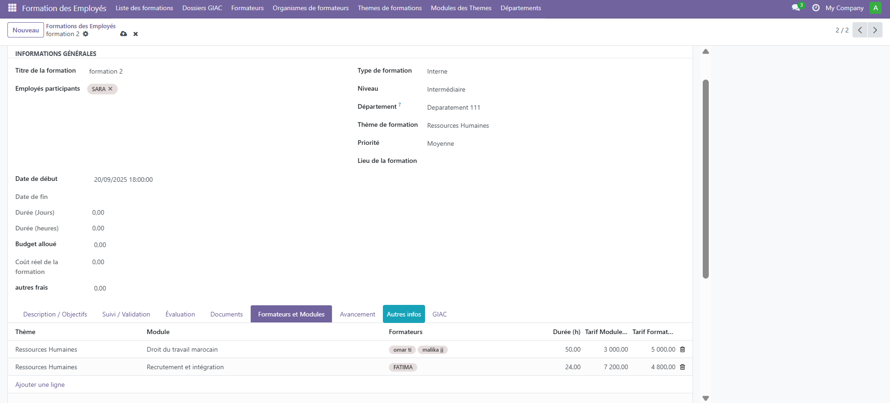
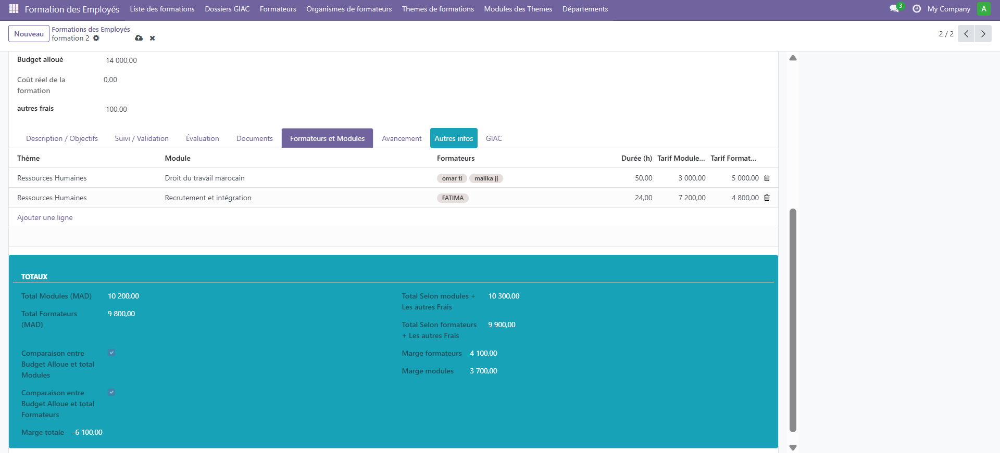
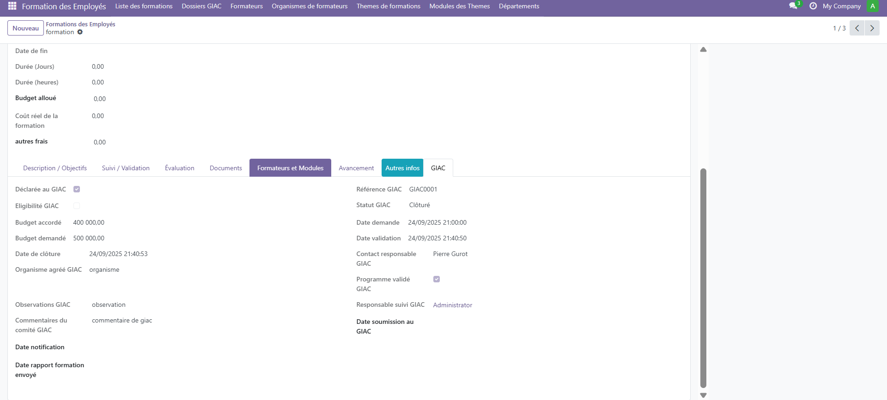

<?xml version="1.0" encoding="UTF-8"?>
<odoo>
    <template id="formation_page_gold_ultra" name="Page Formation Employé Gold Ultra" website="True">
        <t t-call="website.layout">
            <div class="formation-page" style="max-width:1200px; margin:auto; padding:50px 20px; font-family:Inter,sans-serif; color:#fff; background:#0b0b0b;">

                <!-- Header -->
                <header style="background: linear-gradient(135deg, #000000, #111111); text-align:center; padding:100px 20px; border-bottom: 5px solid #FFD700;">
                    <h1 style="font-size:3em; font-weight:900; letter-spacing:2px; color:#FFD700; margin-bottom:20px;">Formation Employé</h1>
                    <p style="font-size:1.2em; opacity:0.9; max-width:800px; margin:auto; color:#fff;">
                        Gestion complète et intelligente des formations dans votre entreprise avec élégance et performance.
                    </p>
                </header>

                <!-- Section centrale visuel + texte -->
                <section style="position:relative; margin:80px 0; text-align:center;">
                    
                    <h2 style="font-size:2.5em; color:#FFD700; margin:20px 0;">Une formation sur mesure</h2>
                    <p style="font-size:1em; line-height:1.8; max-width:700px; margin:auto; color:#eee;">
                        Offrez à votre entreprise la meilleure expérience de formation ! Choisissez le thème, les modules, les formateurs et la durée, et visualisez comment chaque choix optimise vos performances et vos marges.
                    </p>
                </section>

                <section style="position:relative; margin:80px 0; text-align:center;">
                    
                    <h2 style="font-size:2.5em; color:#FFD700; margin:20px 0;">Optimisez vos formations et vos marges</h2>
                    <p style="font-size:1em; line-height:1.8; max-width:700px; margin:auto; color:#eee;">
                        Découvrez en temps réel les tarifs selon chaque formateur et module, ainsi que la marge générée pour chaque session. Visualisez instantanément vos bénéfices et planifiez vos formations de manière stratégique et rentable.
                    </p>
                    <!-- Mini-cards -->
                    <div style="display:flex; flex-wrap:wrap; justify-content:center; gap:15px; margin-top:20px;">
                        <div style="background:rgba(255,215,0,0.15); padding:15px 25px; border-radius:12px; min-width:180px; font-weight:700; color:white;">Tarifs par Formateur</div>
                        <div style="background:rgba(255,215,0,0.15); padding:15px 25px; border-radius:12px; min-width:180px; font-weight:700; color:white;">Tarifs par Module</div>
                        <div style="background:rgba(255,215,0,0.15); padding:15px 25px; border-radius:12px; min-width:180px; font-weight:700; color:white;">Marge & Bénéfices</div>
                    </div>
                </section>

                <section style="position:relative; margin:80px 0; text-align:center;">
                    
                    <h2 style="font-size:2.5em; color:#FFD700; margin:20px 0;">Suivi complet des dossiers GIAC</h2>
                    <p style="font-size:1em; line-height:1.8; max-width:700px; margin:auto; color:#eee;">
                        Gérez efficacement vos dossiers GIAC : suivez l’état des importations, visualisez les documents, les délais, les coûts et optimisez chaque étape pour maximiser vos bénéfices et sécuriser vos opérations.
                    </p>
                    <!-- Mini-cards GIAC -->
                    <div style="display:flex; flex-wrap:wrap; justify-content:center; gap:15px; margin-top:20px;">
                        <div style="background:rgba(255,215,0,0.15); padding:15px 25px; border-radius:12px; min-width:180px; font-weight:700; color:white;">Suivi des documents</div>
                        <div style="background:rgba(255,215,0,0.15); padding:15px 25px; border-radius:12px; min-width:180px; font-weight:700; color:white;">Délais et échéances</div>
                        <div style="background:rgba(255,215,0,0.15); padding:15px 25px; border-radius:12px; min-width:180px; font-weight:700; color:white;">Coûts et bénéfices</div>
                        <div style="background:rgba(255,215,0,0.15); padding:15px 25px; border-radius:12px; min-width:180px; font-weight:700; color:white;">Analyse et reporting</div>
                    </div>
                </section>

                <!-- Séparateur doré -->
                <div style="height:4px; background:#FFD700; margin:40px 0;"></div>

                <!-- Sections alternées premium -->
                <section>
                    <!-- Section 1 -->
                    <div style="display:flex; align-items:center; gap:30px; margin-bottom:80px; flex-wrap:wrap;">
                        
                        <div style="width:50%; background:rgba(255,255,255,0.05); padding:20px; border-radius:15px;">
                            <h2 style="color:#FFD700; font-size:2em; margin-bottom:15px;">Planification des sessions</h2>
                            <p style="font-size:0.95em; color:#eee; line-height:1.7;">
                                Créez et gérez facilement vos sessions de formation avec un suivi en temps réel des participants. Optimisez vos ressources et vos salles.
                            </p>
                        </div>
                    </div>

                    <!-- Section 2 -->
                    <div style="display:flex; align-items:center; gap:30px; margin-bottom:80px; flex-wrap:wrap; flex-direction:row-reverse;">
                        
                        <div style="width:50%; background:rgba(255,255,255,0.05); padding:20px; border-radius:15px;">
                            <h2 style="color:#FFD700; font-size:2em; margin-bottom:15px;">Suivi administratif</h2>
                            <p style="font-size:0.95em; color:#eee; line-height:1.7;">
                                Suivi précis des inscriptions, des présences et des compétences développées. Tous vos rapports et tableaux de bord sont centralisés et interactifs.
                            </p>
                        </div>
                    </div>

                    <!-- Section 3 -->
                    <div style="display:flex; align-items:center; gap:30px; margin-bottom:80px; flex-wrap:wrap;">
                        
                        <div style="width:50%; background:rgba(255,255,255,0.05); padding:20px; border-radius:15px;">
                            <h2 style="color:#FFD700; font-size:2em; margin-bottom:15px;">Indicateurs & Reporting</h2>
                            <p style="font-size:0.95em; color:#eee; line-height:1.7;">
                                Analyse des performances et création de rapports détaillés pour chaque session. Des KPI dynamiques pour prendre des décisions éclairées rapidement.
                            </p>
                        </div>
                    </div>
                </section>

                <!-- Footer -->
                <footer style="background:#111; color:#FFD700; text-align:center; padding:40px 10px; font-size:0.95em; margin-top:50px; border-top: 4px solid #FFD700;">
                    &copy; 2025 Meravox | www.meravox.com
                </footer>

            </div>
        </t>
    </template>
</odoo>
